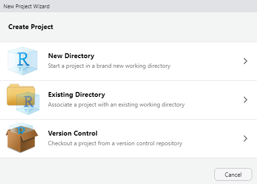
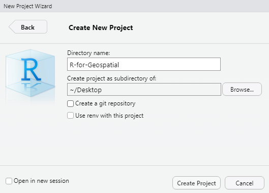
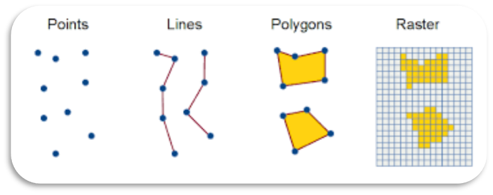
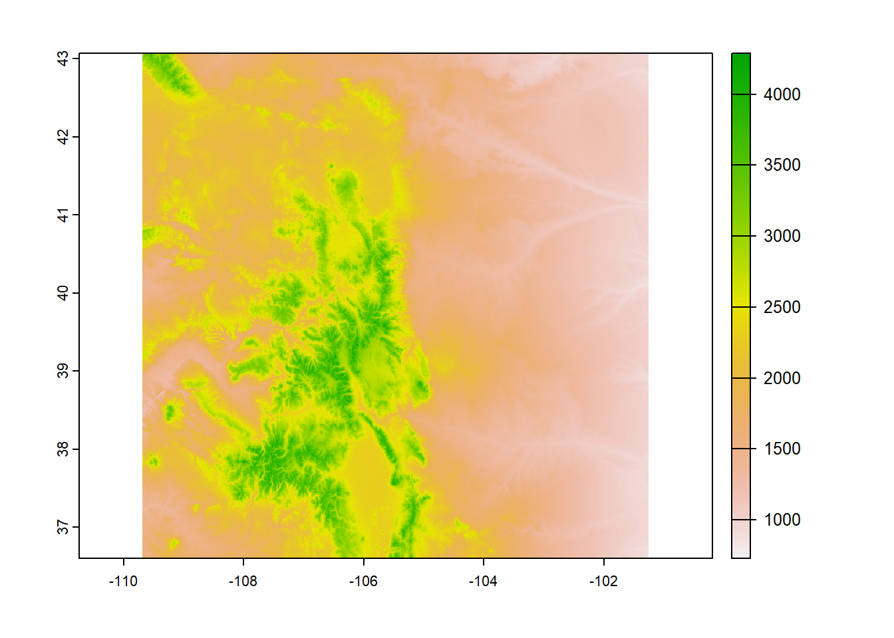

packageLoad <-
function(x) {
for (i in 1:length(x)) {
if (!x[i] %in% installed.packages()) {
install.packages(x[i])
}
library(x[i], character.only = TRUE)
}
}Lesson 1
Set up an R Project
As a first step whenever you start a new project, workflow, analysis, etc., it is good practice to set up an R project. R Projects are RStudio’s way of bundling together all your files for a specific project, such as data, scripts, results, figures. Your project directory also becomes your working directory, so everything is self-contained and easily portable.
You can start an R project in an existing directory or in a new one. To create a project go to File -> New Project:

Let’s create a new directory and call it ‘R-for-Geospatial’. You can make it a sub directory of any folder you wish.

Now we are working in our R project. You can see the working directory printed at the top of your console is now our project directory, and in the ‘Files’ tab in RStudio you can see we have an .Rproj file, which will open up this R project in RStudio whenever you come back to it. For example close out of this R session, navigate to the project folder on your computer, and double-click the .Rproj file.
Read in R packages
Now we have started a fresh R session in our new R project, we need to read in the libraries needed to work through today’s lesson. You should have all packages installed after finishing the set-up instructions on the Getting Started page.
In the set-up lesson, you used the following function to check if a package is installed, if not install it, and then load that package into your session.
We will be using this function the rest of the workshop to read in a list of packages at the beginning of each lesson, so lets store it as its own R script that we can call in later with the source() function. Sourcing functions is good practice as it reduces repetitiveness of rewriting them every time you want to use it.
Now let’s use it to load in our libraries needed for today. Assuming you already installed all of these, loading them should run pretty quick.
packageLoad(c("rgbif", "tidycensus", "tigris", "sf", "terra", "dplyr", "tidyr", "readr"))Today we are going to walk through how to import spatial data directly into R, clean it, and save it so we can work with it the rest of the workshop.
We will work through how most of these data sets were imported and cleaned today, but not all of them are covered. To see how all data sets were created you can check out the Pulling Data page.
Spatial Data Formats
Vector Data
Locations (points)
- Coordinates, address, country, city
Shapes (lines or polygons)
- Political boundaries, roads, building footprints, water bodies
Raster Data
Images (matrix of cells organized by rows and columns)
Satellite imagery, climate, landcover, elevation

Import and manipulate spatial data
Now we have our project set up, packages loaded, and a basic understanding of the spatial data types we will be using. Let’s get some data to work with! For the first part we are going to import spatial data into R using the tigris, tidycensus, and rgbif packages. The raster data has been pre-processed (see Pulling Data for how that was done in R) and we will read those objects in from file.
First, lets create a new folder in our project directory called ‘data/’ where we will be saving all the data used for this workshop.
Vector Data
tigris
All the data we are working with in this course is confined to the state of Colorado. Let’s start by pulling in political boundaries for Colorado counties with the tigris package.
# download county shapefile for the state of Colorado
counties <- tigris::counties(state = "CO")tigris has a lot of other available data sets in addition to political boundaries. In this course we are going to work with additional line shape files (rivers and roads) and polygons (urban areas).
Due to the density of rivers and roads in Colorado and therefore large file size, we are going to limit this download to just Larimer County.
rivers <- linear_water(state = "CO", county = "Larimer")
roads <- roads(state = "CO", county = "Larimer")Our object rivers actually includes all linear water features in the county, such as streams/rivers, braided streams, canals, ditches, artificial paths, and aqueducts.
counties is a spatial polygon data set. We are going to work with one more polygon data set which includes the boundaries of individual urban areas and clusters across Colorado. We can explore the urban_areas() function from the tigris package to get more details on how urban areas are defined.
?urban_areasNow let’s download the data set. By default it imports urban areas for all of the U.S., but we just want areas within Colorado. We have to do some data wrangling to filter out just Colorado urban areas. The column “NAME10” has the city and state of each urban area. We can use the separate() function from the tidyr package to split the “NAME10” column into two separate columns for city and state, and then we can use the filter() function to subset just the urban areas in Colorado.
We are also using a new function here, the pipe %>% operator. This allows us to run a sequence of operations without having to create intermediate objects that take up unnecessary space in your environment. It can be interpreted as ‘and then’, taking the output of one function ‘and then’ running the next function using that output as the input. We will be using the pipe a lot throughout this workshop.
urban <- urban_areas() %>%
tidyr::separate(col = NAME10, sep = ", ", into = c("city", "state")) %>%
dplyr::filter(state == "CO")tidycensus
tidycensus is an R package that allows users to access U.S. Census data, imported as “tidy” data designed to work with tidyverse packages. The tidyverse is a collection of R packages designed for data manipulation, exploration, and visualization that you are likely to use in every day data analysis. They all use the same design philosophy, grammar, and data structures. When you install the tidyverse, it installs all of these packages, and you can then load all of them in your R session with library(tidyverse). You can learn more about the tidyverse and the packages it includes here: https://www.tidyverse.org/.
The tidycensus package requires the use of an API key to download data. You can obtain an API key for free at http://api.census.gov/data/key_signup.html
Once you have the API key, you need to run the following line of code before downloading any census data:
census_api_key("PASTE YOUR API KEY HERE")Now let’s first investigate what census variables are available (there’s a lot). tidycesus has two major functions: get_decennial() to access the 2000, 2010, and 2020 decennial U.S. Census data, and get_acs() to access the 1-year and 5-year American Community Survey (ACS) data. For this workshop we are going to work with ACS data.
We can get the full list of available variables with the load_variables() function, and we are interested in the 5-year ACS data for 2019 (the most recent year available). We then pass this output to View() which will open the data frame in a separate tab to be viewed similar to an excel spreadsheet.
load_variables(2019, "acs5") %>% View()We are going to download total population and median household income. We use the get_acs() function and specify we want this data at the county level for the state of Colorado and supply a string of the variables we want, using the variable ID.
census <- get_acs(geography = "county", state = "CO", year = 2019,
variables = c("B01003_001", "B19013_001"), output = "wide")Let’s clean this up a bit. “E” in the variable name stands for estimate and “M” is margin of error. For our purposes we are only looking at the estimate values, so lets remove the other columns and rename the ones we keep with more informative titles.
census <- census %>%
dplyr::select(contains("E")) %>%
rename(total_pop = B01003_001E, med_income = B19013_001E)rgbif
The last of our spatial data download is species occurrences in the form of point data (latitude/longitude). rgbif is a package that allows you to download species occurrences from the Global Biodiversity Information Facility (GBIF), a database of global species occurrences with over 2.2 billion records.
We are going to pull occurrence data for a couple of charismatic Colorado species:
 |
||
| Elk | Yellow-Bellied Marmot | Western Tiger Salamander |
To pull data for multiple species we are going to run the occ_data() function from the rgbif package over multiple species using a for loop. For a refresher on for loops see the R Basics page.
We first need to create a string of species scientific names to use in the download function, and a second string with their associated common names.
#make a string of species names to use in the 'occ_data' function
species <- c("Cervus canadensis", "Marmota flaviventris", "Ambystoma mavortium")
#also make a string of common names
common_name <- c("Elk", "Yellow-bellied Marmot", "Western Tiger Salamander")Now we are going to write a for loop that iterates across our three species. We first create an empty list that is the length of our species vector that we will fill with each species data download output and bind all the data together outside of the loop.
occ <- vector("list", length = length(species))
for(i in 1:length(occ)){
occ[[i]] <-
occ_data(
scientificName = species[i],
hasCoordinate = TRUE,
geometry = st_bbox(counties),
limit = 2000
) %>%
.$data #return just the data frame. The '.' symbolizes the previous function's output
# add species name column as ID to use later
occ[[i]]$ID <- common_name[i]
#clean by removing duplicate occurrences
occ[[i]] <-
occ[[i]] %>% distinct(decimalLatitude, decimalLongitude, .keep_all = TRUE) %>%
dplyr::select(Species = ID,
decimalLatitude,
decimalLongitude,
year,
month,
basisOfRecord) #only keep relevant variables
print(i) # this prints each element once its finished so you can see the progress
}
# Bind all data frames together
occ <- bind_rows(occ)Raster Data
The raster files for this workshop have already been processed (see Pulling Data for how this was done). Click each button below to download the GeoTIFF files for elevation and land cover (plus the necessary land cover attribute file) and save them in your ‘data/’ folder within this project.
Once saved, we can read in raster files using the rast() function from the terra package.
elevation <- terra::rast("data/elevation_1km.tif")terra::plot(elevation)
Coordinate Reference Systems
Probably the most important part of working with spatial data is the coordinate reference system (CRS) that is used. In order to analyze and visualize spatial data, all objects must be in the exact same CRS.
We can check a spatial object’s CRS by printing it to the console, which will print a bunch of metadata about the object.
elevationclass : SpatRaster
dimensions : 1322, 1724, 1 (nrow, ncol, nlyr)
resolution : 0.004895063, 0.004895063 (x, y)
extent : -109.6875, -101.2484, 36.59761, 43.06889 (xmin, xmax, ymin, ymax)
coord. ref. : lon/lat NAD83 (EPSG:4269)
source : elevation_1km.tif
name : elevation_1km
min value : 726
max value : 4288 Before we start performing spatial analyses in Lesson 2 we will need to return to the CRS of these spatial objects and make sure they all match. If you need to transform a spatial object to a different CRS you can use the st_transform() function from the sf package for vector data, and project() from the terra package for raster data.
Saving spatial data
You do not necessarily need to run this part, since the ‘data/’ folder we downloaded at the beginning of today’s lesson contains all these data files we will need for tomorrow. However learning how to write spatial data to file is an important skill.
To save shapefiles, you can use the st_write() function from the sf package. If the intended file happens to already exists and you want to overwrite it, you would add append = FALSE to the argument.
st_write(rivers, "data/rivers.shp")
st_write(roads, "data/roads.shp")
st_write(urban, "data/urban_areas.shp")
st_write(counties, "data/CO_counties.shp")We can save point files as a csv with the write_csv() function. We will go over tomorrow how to read a csv file with coordinates and convert it into a spatial object.
write_csv(census, "data/census_data.csv")
write_csv(occ, "data/species_occ.csv")